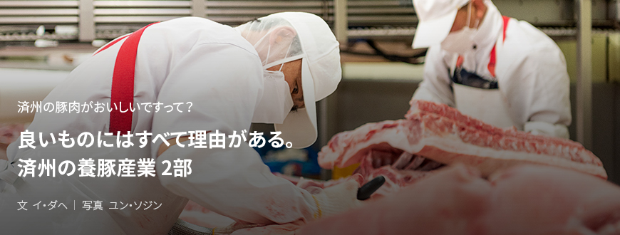
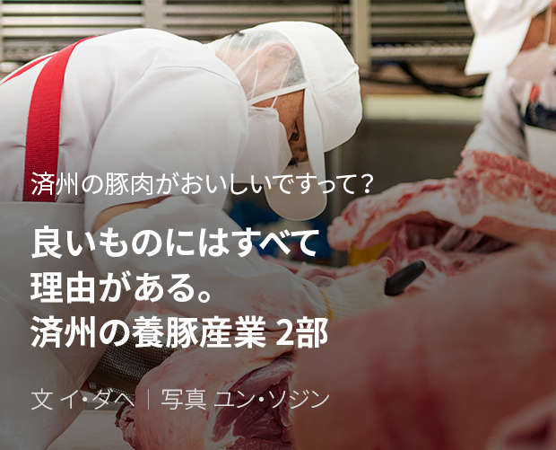
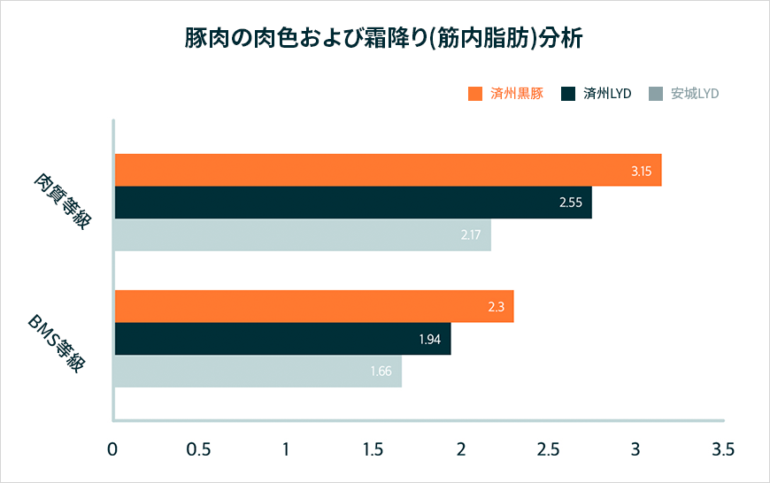
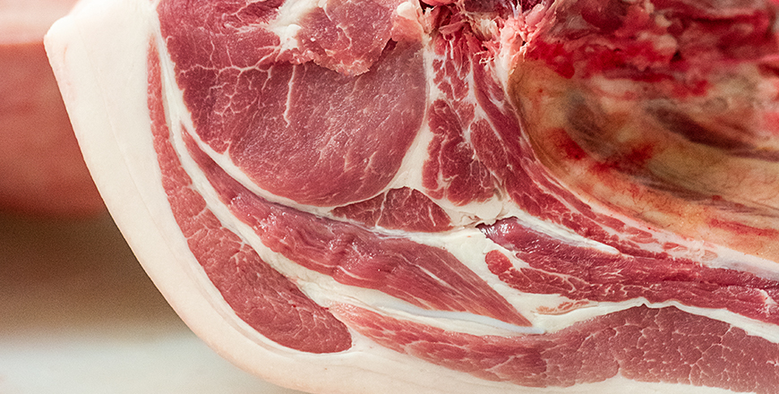
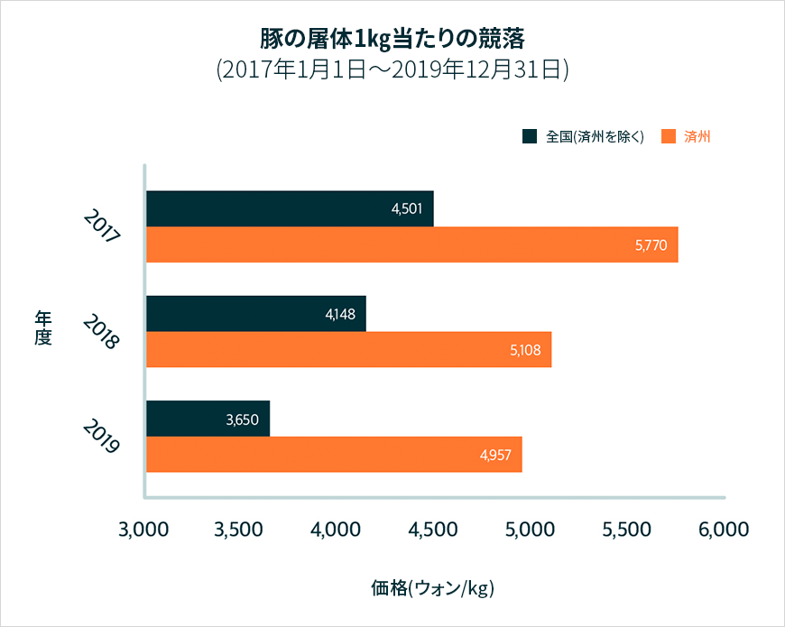
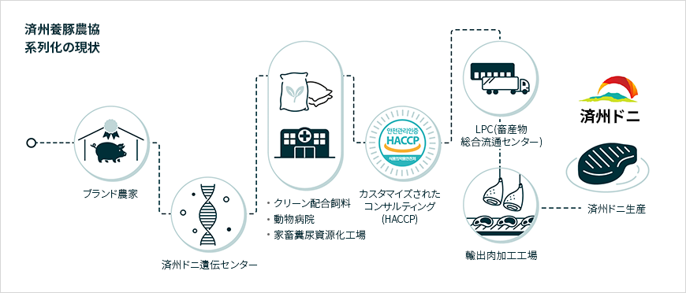
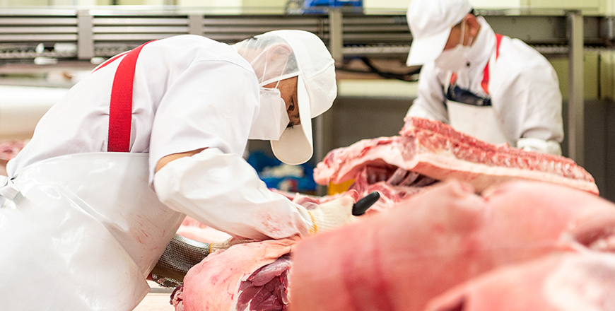
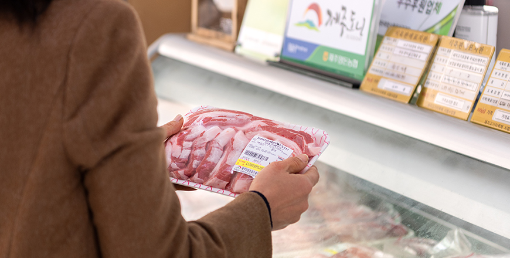
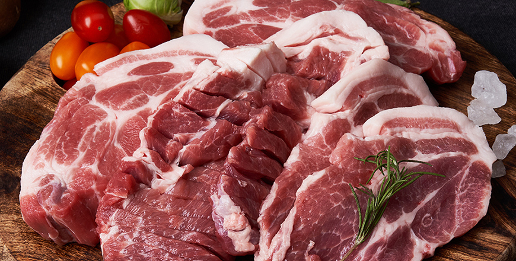

기획취재콘텐츠
- Home
- 제주라이프
- 기획취재콘텐츠
良いものにはすべて理由がある。済州の養豚産業 2部새로운 글



恵まれた自然の味、クリーンな済州豚肉
島という地理的特性は、外部からの悪性家畜疾病の流入を遮断する。また、恵まれた自然環境のきれいな空気と水、穏やかな気候は高品質豚肉の生産に最適な生育条件を提供する。恵まれた自然から飼育された済州豚肉の優れた品質は、科学的分析でも証明されてきた。



※ 出展 : 韓国主要豚肉生産地域による肉質分析報告書
済州の黒豚は赤色が濃く、味を左右する霜降り(筋内脂肪)が通常の豚に比べて高い。また、多価不飽和脂肪酸の含有量が高くコレステロールの含有量が割りと低いため、健康機能性の面からも非常に優れている。組織が固いため食感が良く、こうばしい脂肪はグルメの口を魅了する。

済州の伝統黒豚ではないが、済州で飼育された白豚(LYD交雑種)もまた、他の地域で飼育された豚肉に比べて赤色が濃くマーブリングが高く、同じくコレステロール含量が低く、多不飽和脂肪酸含量が高い。 済州の豚は全体的に筋肉の組成、官能評価の肉色、物性（食感）の項目で強みを見せ、特に物性の項目は消費者が違いを認知するほどはっきりとした違いを見せた。


※ 出展 : 畜産物品質評価院畜産流通情報期間別の競落代金
※ データ抽出期間 : 2017年1月1日～2019年12月31日
※ データ抽出期間 : 2017年1月1日～2019年12月31日
クリーン地域で良質な種豚と飼育技術に基づいて飼われた済州の豚肉は、その品質を認められ韓国でもプレミアム豚肉として販売される。2017年から2019年までの3年間は、済州を除く全国豚肉の競落代金平均が1kg当たり4千104ウォン。同じ期間で済州豚肉の競落代金平均は1kg当たり5千282ウォンで、全国豚肉の競落代金平均より約20%高い。また全国に流通する豚肉の約25％は済州産の豚肉である。
豚肉、ブランドになる。
済州の養豚産業は組合の形をした共同体を中心に成長した。それぞれの組合と農場では種豚開発から飼育環境の管理、しっかりとした生産および品質管理ステムの構築など一貫した品質の豚肉を開発するために努めている。また、豚肉の小売・卸売の流通および加工品の開発など、6次産業化により産業競争力を確保している。済州養豚農協のプレミアム豚肉ブランドである「済州ドニ」は、生産から流通までのブランド契約23農家、輸出契約50農家、種豚供給87農家など、済州道内の100以上の農家を統合管理することにより一貫して高品質の豚肉を生産している。済州養豚ブランドのイメージ堤高および拡散に向けて流通とマーケティングにも投資を惜しまない。済州東部畜産営農組合法人は、スマート畜舎を導入して環境にやさしいシステムを構築するなど、地域と共同発展しながら良質な養豚の生産に積極投資している。それに済州豚肉の加工および流通ブランドの「モントラック」を設立、済州豚の味を道内外に発信している。
農場から食卓まで、プレミアム済州豚肉ブランド「済州ドニ」
「済州ドニ」は、済州養豚農協(組合長コ・グォンジン)で管理するプレミアム済州豚肉ブランド。済州養豚農協は、優秀な品質をもつ済州豚肉の生産管理と流通のため2007年度「済州ドニ」ブランドを構築、消費者選好に基づいた標準化した良質規格豚の生産から流通にいたるまでしっかりとしたシステムで管理している。
- 済州養豚農協組合長のコ・グォンジンさんが加工前に豚肉の様子をチェックしている。 -
済州養豚農協は、ブランド農家を組織化および系列化して種豚、飼料、仕様管理、飼育環境などで通常の豚肉と差別化された高品質な済州道のブランド豚肉を小売・卸売で流通しています
系列化は農家で「済州ドニ」を生産するまで種豚、飼料、流通、輸出と肉加工などの段階別に運営および管理する体制を意味する。


2012年に済州養豚農協が設立した済州ドニ遺伝センターでは、優秀な血統の種豚を輸入して済州に合わせた種豚を交配、それを済州道内の農家に普及している。2019年度の種豚供給頭数は87農家・3,539頭で、済州道内278の養豚農家のうち25%が済州養豚農協済州ドニ遺伝センターから種豚を提供されている。
種豚を提供されている農家は済州養豚農協のクリーン配合飼料工場で生産した、臭みの低減と生産性向上に有効な良質の飼料を食わせて高品質の豚肉を生産する。畜舎から排出される糞尿は済州養豚農協の家畜糞尿資源化工場で液肥と堆肥、農業用水で処理し、個別農家の糞尿処理の悩みを解決する。そのおかげで農家は豚の成育環境および品質管理に集中できる。済州養豚農協は、さらに持続的な農場別のカスタマイズ管理ができる動物病院を運営し、生産と流通面から農家に合わせたコンサルティングを提供すると共に、優秀な豚肉の生産に必要な専門化された支援を提供している。
2018年に済州養豚農協は、2万6千851㎡の敷地に地下1階、地上3階、延べ面積1万515㎡規模の畜産物総合流通センターを建設した。畜産物総合流通センターでは1日に1千500頭の豚が屠畜できる。屠畜過程で発生する廃水を1千トンまで処理できる装置と交差汚染防止システムも構築した。2019年には畜産物総合流通センターだけで35万4438頭の済州豚が屠畜された。
しっかりとした管理により生産された済州豚肉の「済州ドニ」は、その優秀性を認められ8年連続で優秀畜産ブランド認証を獲得した。それだけでなくKAPF農林部畜産物ブランド競進大会の優秀賞と韓国畜産物ブランド競進大会の大統領賞を受賞するなど注目すべき成果を収めている。

- 輸出肉加工工場では屠畜した豚を部位別に解体することから真空包装にいたるまで、
消費者に豚肉を届ける最終段階の加工が行われる。 -
消費者に豚肉を届ける最終段階の加工が行われる。 -
消費者にも「済州ドニ」は信頼できる済州豚肉ブランドとして親しまれている。「済州ドニ」は、済州養豚農協の輸出肉加工工場(済州)と龍仁肉加工工場(龍仁)で加工され、道内50以上の外食事業者に供給されている。また、道内の済州市農協・ハナロマートの他に22か所を含め、プレミアムオンライン食品流通プラットフォームの「マーケットカリー」と畜産物直接取引プラットフォームの「ミートボックス」など、オン・オフラインの総合スーパーや流通プラットフォームで活発に販売している。

- 済州養豚農協の輸出肉加工工場が直営販売店を運営する。
加工したばかりの新鮮な豚肉がリーズナブルな価格で購入できる。 -
加工したばかりの新鮮な豚肉がリーズナブルな価格で購入できる。 -
済州養豚農協は「済州ドニ」ブランドの知名度を高め、消費者に合わせた商品を開発する取り組みを進め、試食イベント、直接取引市場を運営して全国の消費者に直接出会うことにより済州豚肉の優秀さを発信する。また、1人および2人世帯の拡大による小包装選好の傾向に合わせてそれに対応できる装置、人材、事後処理方策などの関連システムを構築すると共に、小包装豚肉を小売・卸売で販売するオンラインモールの販売チャンネルを確保する予定だ。

- ⓒ済州養豚農協 -
2020年には済州ドニブランド独自のオンラインショップとモバイルアプリを構築し、済州産豚肉の長所を強調した積極的なマーケティング戦略を展開しております。また、各地の地域イベントと連携して試食会を着実に実施していきたいと思います
- 済州養豚農協経済事業本部チームリーダーのヤン・ギョンミさん
品質および生産管理の能力を向上するための努力も惜しまない。済州ドニ遺伝センターに人工授精センター(AI)を設立して均一な品質の済州種豚を生産および供給し、安定的な定額供給から毎年問題となっている夏期の受胎率向上を図っている。畜産物総合流通センターにはVCS2000(豚の屠体自動判定機械)を屠畜ラインに設置し、全体の精肉量と精肉率、大分割部位の精肉量と精肉率の測定値をデータ化して生産・屠畜・等級判定・加工段階などにおける屠畜システムを先進化すると共に競争力を高めていく。
이전글
다음글